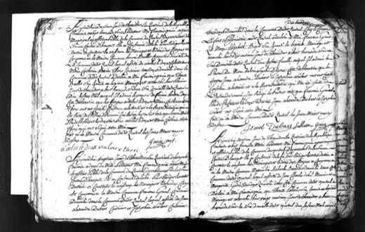
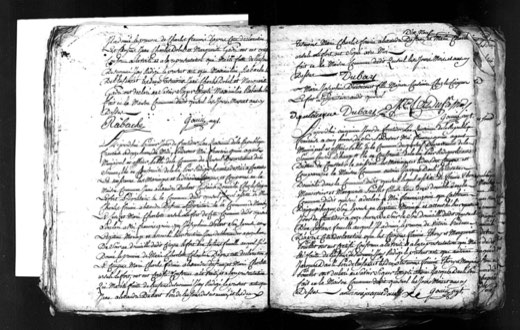
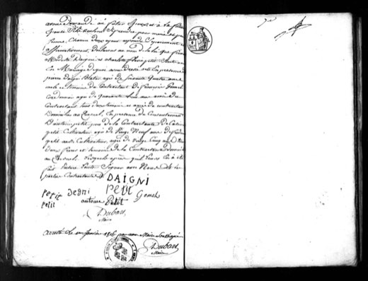
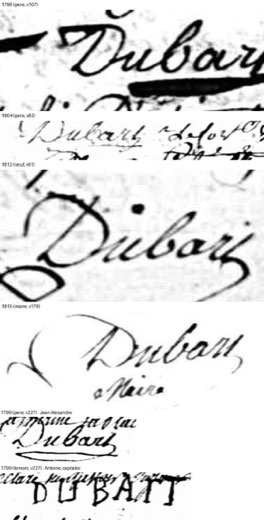
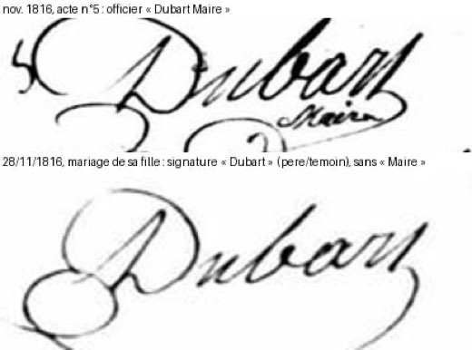

Sosa 16 · Côté Dubart
Jean « Alexandre » Dubart
Né en 1759 à Élincourt-Sainte-MargueriteMort en 1821 à Le Quesnel
Arrière-arrière-grand-père de René, côté paternel. Concierge au château du Quesnel.
Récit
Jean Alexandre Dubart naît le 25 avril 1759 à Élincourt-Sainte-Marguerite, dans l'Oise, village du district de Noyon que l'extrait produit en 1794 appelle, comme le voulait la Révolution, « Elincourt la Montagne » ; il est baptisé le lendemain, et les pièces ne donnent pas toutes le même jour pour sa naissance. Il est le fils légitime de Jean Dubart, clerc séculier de la paroisse, qui signe, et de Magdeleine Lemaire. Son parrain est un garçon, Alexandre Loffart, que le curé dit « cousin germain maternel » et qui signe ; sa marraine, Geneviève Senechal, ne sait pas signer. Son père est mort avant 1794. Puis les archives se taisent : on ne sait ni où il a grandi, ni comment il est devenu cuisinier.
Il apparaît à trente-cinq ans, à Amiens, où il épouse le 2 octobre 1794 (11 vendémiaire an III) Marie Josephine Sallart, couturière née en 1766 à Hédauville, fille de Jean Baptiste Firmin Sallart, mort, et de Marie Dail. Le mariage est civil, devant l'officier d'état civil, comme tous depuis 1792, deux mois après la chute de Robespierre. Les bans ont été publiés au Quesnel ; les deux époux y demeurent, mais résident « actuellement » à Amiens, rue des Crignons, sans profession indiquée, avec quatre amis amiénois pour témoins, dont l'un loge « chez le citoyen Dufresne ». Selon les registres d'écrou recopiés par Darsy et selon l'abbé Leroy, historien du village, le seigneur du Quesnel, Léonor Augustin Le Fort, est alors détenu à Amiens depuis février, avec sa femme, née Dufresne ; une famille Dufresne de cette même rue est assignée à résidence. On a donc pensé que le couple servait ces maîtres : l'acte ne dit rien de la raison de leur séjour, et rien ne le prouve.
Revenus au Quesnel, gros village du Santerre qui compte alors, selon Leroy, quelque 1 300 habitants et 310 feux, presque tous les métiers de la campagne et une briqueterie pour le seigneur, ils vivent chez « le citoyen Le Fort » : c'est à son domicile que naissent leurs enfants, Marie Josèphe Charlotte Alexandrine à l'été 1795, Marie Charlotte Colombe en 1796 et, le 19 décembre 1799, Charles Alexandre Éloi. Dans l'acte de 1795, le père déclare que lui et sa femme y sont « tous deux domestiques » ; il est cuisinier en l'an III, en l'an IV et encore en 1804, elle couturière. Ce Le Fort est dit « cultivateur » en 1795, puis propriétaire, sans que son prénom soit donné ; il est très vraisemblablement le seigneur du château, dont, selon Leroy, on avait tenté en 1794 de faire passer le titulaire pour un cultivateur, mais l'identité n'est pas établie. À la naissance d'Éloi, un Antoine Dubart, marchand du Quesnel, sert de témoin, sans lien déclaré ; l'acte porte deux signatures Dubart, l'une cursive, l'autre en capitales maladroites, que l'on attribue à Antoine par simple comparaison. En 1796, le couple avait été témoin de la naissance d'une fille d'un cordonnier du village.
Thaïs naît en 1798 et Louis Charles Ambroise le 16 novembre 1804 à huit heures du soir : son père, toujours cuisinier, le déclare le lendemain dans un acte signé « Le Fort, maire », avec pour témoins un Jean Louis Le Fort, propriétaire à Hamel-sous-Corbie, et une Marie Charlotte Ursule Le Fort, 22 ans, que l'on identifie, sans preuve, à la fille du seigneur. Cela fait cinq enfants : les filles Alexandrine, Colombe et Thaïs, les fils Éloi, dont on ne sait rien après la naissance, et Louis.
En 1812, les actes le disent propriétaire ; on ne sait ni ce qu'il possède ni comment. Josephine meurt le 10 novembre, à 46 ans, en sa maison au Quesnel ; il déclare le décès avec une couturière de 53 ans, Marie Adélaïde Élisabeth Bigot, que l'acte dit apparentée à la défunte (sa nièce, semble-t-il). Selon la liste des maires de Geneawiki, un « Dubart » sans prénom est maire de juillet 1810 à mai 1811, puis d'avril 1813 à décembre 1816 : ce sont les années où l'Empire tombe, où reviennent les Bourbons, puis Napoléon pour les Cent-Jours. La signature « Dubart, Maire » de 1815 ressemble beaucoup à celle que Jean Alexandre apposera comme père au mariage de sa fille : il en est très probablement l'auteur, mais aucun acte ne le dit maire, et Antoine Dubart reste l'autre candidat. Le 28 novembre 1816, propriétaire de 57 ans, présent et consentant, il signe au mariage de sa fille aînée Charlotte Alexandrine, couturière, avec le charpentier Florent Magloire Durson, du Plessier-Rozainvillers ; la table décennale place ce mariage en 1815, contradiction non résolue.
Il meurt le 31 octobre 1821, à deux heures de relevée, au château du Quesnel, dont l'acte le dit concierge ; l'acte de mariage de Thaïs, en 1828, donne le 30 : un jour d'écart sans explication. Son gendre Durson, charpentier de trente ans, déclare le décès, avec Antoine Petit, garde de bois de 72 ans, qui se dit son ami. Qui possédait le château en 1821 n'est pas établi : on a supposé qu'il servait les Le Fort ou leurs héritiers, les Blin de Bourdon, sans preuve. Louis, Colombe et Thaïs vivront à Paris. Ce qu'il a laissé, l'origine de sa propriété, son rôle exact de maire et sa vie avant 1794 restent à chercher.
Contexte : dossier/jean-alexandre-vue-historique.md (Le Quesnel, les Le Fort, Leroy, Darsy) ; recherches/generation-5/dubart-sallart/contexte/rapport.md (maires, citoyen Le Fort).
Récit rédigé le 11 novembre 2026 à partir de la base, qui fait foi. Chaque marque ouvre la preuve du passage.
Famille
Autres liens dits par les actes
- Florent Magloire DURSON — gendre (déclarant)
Sa vie dans le temps
- Règne de Louis XV
- Jean Alexandre Dubart est né la veille de son baptême, soit le 25/04/1759 (« né d'hier »). — Élincourt-Sainte-Marguerite vérifié
- Jean Alexandre Dubart est né le 26/04/1759 à Élincourt (« Elincourt la Montagne », district de Noyon), selon l'extrait de naissance produit au mariage — Élincourt-Sainte-Marguerite partiellement vérifié
- Jean Alexandre Dubart est baptisé à Elincourt-Sainte-Marguerite le 26/04/1759. — Élincourt-Sainte-Marguerite vérifié
- Jean Alexandre est fils légitime de Jean Dubart et de Magdeleine Lemaire. — Élincourt-Sainte-Marguerite vérifié
- Le parrain de Jean Alexandre est Alexandre Loffart [probable], garçon, dit « cousin germain maternel » ; il signe. La marraine est Geneviève Senechal, fille, qui ne sait signer. — Élincourt-Sainte-Marguerite partiellement vérifié
- La date de naissance de Jean Alexandre (26/04/1759 pour le baptême) concorde avec celle donnée par l'extrait de naissance produit à son mariage d'Amiens (an III). — Élincourt-Sainte-Marguerite vérifié
- Première République
- Jean Alexandre Dubart et Marie Josephine Sallart se marient à Amiens (1er arrondissement) le 11 vendémiaire an III (02/10/1794) — Amiens vérifié
- Jean Alexandre Dubart est fils de défunt Jean Dubart et de Madelaine Lemaire — Amiens vérifié
- En octobre 1794, les deux futurs époux demeurent au Quesnel et résident « actuellement » à Amiens, rue des Crignons [?] ; les bans ont été publiés au Quesnel le 5e jour complémentaire de l'an II (21/09/1794) … — Amiens vérifié
- Hypothèse : en septembre-octobre 1794, Jean Alexandre et Josephine résident rue des Crignons à Amiens parce qu'ils servent la famille Dufresne (famille de Mme Le Fort) ou les Le Fort détenus, dans la maison Dufresne où Charles … — Amiens non résolu
- Jean (Alexandre) Dubart est dit « cuisinier » en l'an III, l'an IV (deux actes) — Le Quesnel vérifié
- Une fille, Marie Josèphe Charlotte Alexandrine, est née de Jean Dubart et Josephine Sallart, mariés légitimement, au domicile de Le Fort au Quesnel ; déclarée par le père — Le Quesnel vérifié
- Dans l'acte de naissance d'Alexandrine (3 thermidor an III), le père déclare la naissance « au domicile du citoyen Le Fort y étant tous deux domestiques » : Jean (Alexandre) Dubart, cuisinier, et Josephine Sallart sont dits … — Le Quesnel vérifié
- En 1795-1799, le couple demeure chez le citoyen Le Fort, au Quesnel ; les naissances de 1795, 1796 et 1799 ont lieu à son domicile — Le Quesnel vérifié
- Contexte : de l'an III à l'an VIII, le Quesnel est dans le canton d'Hangest ; état civil tenu par un agent municipal / officier public — Le Quesnel vérifié
- Hypothèse : le citoyen Le Fort, chez qui naissent les enfants, appartient à la famille propriétaire du château du Quesnel — Le Quesnel non résolu
- Le couple est témoin, le 20 thermidor an IV, de la naissance de la fille du cordonnier François Gouel [?] et de Marie Elisabeth [?] Bigot — Le Quesnel vérifié
- Marie Charlotte Colombe DUBART est née le 30 thermidor an IV au domicile de Le Fort, de Jean Alexandre Dubart et Josephine Salart — Le Quesnel vérifié
- Jean Alexandre Dubart a signé de son nom les actes de 1796 et 1799 — Le Quesnel partiellement vérifié
- Marie Charlotte Colombe Dubart est fille de Jean Alexandre Dubart et de Josephine Salart, son épouse — Le Quesnel vérifié
- Charles Alexandre Eloi DUBART est né le 28 frimaire an VIII au domicile de Le Fort — Le Quesnel vérifié
- En l'an VIII, la profession de Jean Alexandre est un mot non déchiffré (« fou[?]ieroye ») ; elle n'est pas établie — Le Quesnel non résolu
- Premier Empire
- Louis Charles Ambroise Dubart est né au Quesnel le 25 brumaire an XIII (16/11/1804) à 8 h du soir, déclaré le 26 par son père — Le Quesnel vérifié
- Louis Charles Ambroise Dubart est fils de Jean Alexandre Dubart et de Marie Josephine Salart, son épouse — Le Quesnel vérifié
- En l'an XIII (1804), Jean Alexandre Dubart est cuisinier, déclaré âgé de 40 ans — Le Quesnel vérifié
- En 1812, Jean Alexandre Dubart est dit propriétaire, 53 ans, domicilié au Quesnel — Le Quesnel vérifié
- Restauration
- Hypothèse : le maire « Dubart » de 1815-1816 est Jean Alexandre Dubart — Le Quesnel non résolu
- La signature « Dubart, Maire » de 1815 est compatible avec celles de Jean Alexandre (1796, 1804, 1812), sans être probante — Le Quesnel non résolu
- Inférence : le maire de 1815 signe en cursive liée, avec le D de Jean Alexandre ; Antoine signait en capitales d'imprimerie en 1799 : la comparaison désigne Jean Alexandre plutôt qu'Antoine, sans le prouver — Le Quesnel non résolu
- Le maire « Dubart » de 1813-1816 est très probablement Jean Alexandre Dubart : sa signature de père au mariage de sa fille (28/11/1816) est presque identique à la signature « Dubart, Maire » de l'acte précédent du même mois, et … — Le Quesnel partiellement vérifié
- Charlotte Alexandrine Dubart, couturière, épouse au Quesnel le 28/11/1816 Florent Magloire Durson, charpentier, 25 ans, du Plessier-Rozainvillers, fils de Valentin Durson et de Marie Thérèse Haigny — Le Quesnel vérifié
- Au mariage de sa fille (28/11/1816), Jean Alexandre Dubart est dit propriétaire, 57 ans, domicilié au Quesnel, présent et consentant, et signe — Le Quesnel vérifié
- Jean Alexandre Dubart est mort le 31/10/1821, à deux heures de relevée, au château du Quesnel — Le Quesnel vérifié
- En 1821, Jean Alexandre Dubart est concierge au château du Quesnel — Le Quesnel vérifié
- Florent Magloire Durson, charpentier, 30 ans, au Plessier-Rozainvillers, est le gendre de Jean Alexandre Dubart et déclare son décès ; Antoine Petit, garde de bois, 72 ans, se dit son ami — Le Quesnel vérifié
- L'acte de mariage de Thaïs (4/10/1828) dit Jean Alexandre Dubart « décédé en la commune du Quesnel le trente octobre mil huit cent vingt un » … — Le Quesnel vérifié
- Marie Françoise Thaïs Dubart, née au Quesnel le 3 ventôse an VI (21/02/1798), est fille de Jean Alexandre Dubart, propriétaire, décédé au Quesnel le 30/10/1821, et de Joséphine Salart, décédée au même lieu le 10/11/1812 — Paris vérifié
Lieux
- Le Quesnel 22 mentions
- Élincourt-Sainte-Marguerite 8 mentions
- Amiens 7 mentions
Documents (29)













Autres sources citées
- dossier/zones-d-ombre.md (agent généalogiste, 27/10/2026) Synthèse de travail (piste, pas une preuve)
- Le Quesnel, tables décennales an XI-1812 (naissances, décès) Acte d'état civil · AD Somme · 5MI_D49
- Le Quesnel, table décennale des mariages 1813-1822 Acte d'état civil · AD Somme · 5MI_D49
- Forum Le Quesnel, « histoire du CHATEAU de LE QUESNEL » Site web · forum local (lequesnel.forumactif.org)
- Inventaire sommaire des AD Somme antérieures à 1790, t. IV, série C : rôles de supplément sur les privilégiés, 1789 Inventaire d'archives · AD Somme (imprimé, 1883) · C 2193
- Wikipédia, « Louis-Alexandre Blin de Bourdon » Site web · Wikipédia
- Wikipédia, « Histoire d'Amiens » (section Révolution) Site web · Wikipédia
- Wikipédia, « Bien national » et « Émigration (1789-1815) » Site web · Wikipédia
- Geneawiki, « 80652 - Le Quesnel », section « Les maires » Site web · Geneawiki
- Abbé Maurice Leroy, Le Quesnel et Saint-Mard-en-Chaussée : faits de guerre et données historiques, 1923 Livre, ouvrage · BnF Gallica
- Amiens, table décennale des mariages 1793-1802 (lettre D) Acte d'état civil · AD Somme · 5MI_D1133
- F.-I. Darsy, Les doléances du peuple et les victimes : souvenirs de la Révolution en Picardie, 1887 Livre, ouvrage · BnF Gallica
- Baptême de Jean Alexandre Dubart, Elincourt-Sainte-Marguerite, 26 avril 1759 Registre paroissial · AD Oise · ELINCOURT-SAINTE-MARGUERITE BMS 1750-1792
- Archives de la Somme, « Listes des maires de 428 communes du département de la Somme (1790-2024) » (Supplément au Dictionnaire du personnel … Livre, ouvrage · archives.somme.fr · PDF media 823a55fd-8d23-4b78-a95b-63d9862c9ad6
Ce qu'on ignore
Hypothèse : Jean « Alexandre » Dubart, concierge du château du Quesnel, était au service des familles Le Fort ou Blin de Bourdon.
non résolu · A0099
En l'an VIII, la profession de Jean Alexandre est un mot non déchiffré (« fou[?]ieroye ») ; elle n'est pas établie
non résolu à relire sur original · A0144
Hypothèse : le maire « Dubart » de 1815-1816 est Jean Alexandre Dubart
non résolu aucune pièce ne nomme le maire · A0165
La signature « Dubart, Maire » de 1815 est compatible avec celles de Jean Alexandre (1796, 1804, 1812), sans être probante
non résolu D initial de même construction (boucle haute) ; finale différente : crochet descendant en 1796, 1804, 1812, « tt » sans crochet et paraphe d'ouverture en 1815 · A0166
Hypothèse : le citoyen Le Fort, chez qui naissent les enfants, appartient à la famille propriétaire du château du Quesnel
non résolu Le nom Le Fort a pu être porté par d'autres personnes ; prénom du citoyen Le Fort inconnu · A0172
Inférence : le maire de 1815 signe en cursive liée, avec le D de Jean Alexandre ; Antoine signait en capitales d'imprimerie en 1799 : la comparaison désigne Jean Alexandre plutôt qu'Antoine, sans le …
non résolu Antoine a pu apprendre l'écriture cursive entre 1799 et 1810 ; un troisième Dubart n'est pas exclu ; la finale « tt » de 1815 diffère des finales de Jean Alexandre · A0194
Hypothèse : en septembre-octobre 1794, Jean Alexandre et Josephine résident rue des Crignons à Amiens parce qu'ils servent la famille Dufresne (famille de Mme Le Fort) ou les Le Fort détenus, dans la …
non résolu lien de parenté Dufresne de la rue des Crignons / Mme Le Fort non établi ; la rue des Crignons compte d'autres maisons ; date de libération des Le Fort inconnue · A0211
Parmi les pièces transcrites ou lisibles (actes du Quesnel 1796-1821, listes de maires Geneawiki et Archives de la Somme), aucun document ne donne le prénom du maire « Dubart » de 1810-1811 et …
recherche infructueuse Comparaison de signatures par un non-expert, sur images réduites ; Antoine a pu apprendre à signer en cursive après 1799 ; âge et état civil d'Antoine inconnus (aucun acte le concernant en base) … · A0760
Naissance 1759 Élincourt / 1766 Senlis-le-Sec ; décès 1812, 1821
partiel · 2026-10-29 — Décès 1812 et 1821 lus (A0154, A0157) ; dates de naissance 1759 et 1766 confirmées par l'acte de mariage (A0201, A0203), baptêmes non lus Pistes : registres paroissiaux d'Élincourt-Sainte-Marguerite (AD Oise) 1759 ; Senlis-le-Sec (AD Somme) 1766 · R0042
Histoire du Quesnel et de la famille Le Fort
archives inaccessibles · 2026-10-29 — contexte non vérifié Pistes : geneawiki, cadastre, matrice foncière 1791, AD80 · R0043
Qui est le maire « Dubart » de 1815 ?
partiel · 2026-10-29 — AP11, AP12 : signature « Dubart, Maire » ; identité non établie Pistes : délibérations communales du Quesnel (AD80 en ligne) ; annuaire de la Somme 1815-1816 ; actes de 1814-1816 nommant le maire · R0048
Qui est le maire « Dubart » de 1815 ? (comparaison des signatures, délibérations)
partiel · 2026-10-29 — AP01 : signatures compatibles, non probantes ; pas de délibérations du Quesnel en ligne Pistes : annuaire / almanach de la Somme 1813-1816 (liste des maires) ; AD80 série M (nominations de maires, personnel municipal) ; actes de 1813-1816 · R0051
Qui est le citoyen Le Fort du Quesnel (prénom, statut, biens, lien avec le château) ?
partiel · 2026-10-29 — Famille Le Fort seigneuriale du Quesnel documentée (secondaire) jusqu'en 1767 et au mariage de 1806 ; le citoyen Le Fort de 1795-1799 non identifié Pistes : Ledieu 1889 p. 84-85 ; Leroy 1923 ; acte de mariage Blin de Bourdon x Le Fort 1806 ; contrat de mariage ; biens nationaux / émigrés (séries L, 1Q AD Somme) · R0052
Instruments AD Somme : notaires, tables de successions, cadastre, recensements
partiel · 2026-10-29 — Structure du site cartographiée ; aucune cote ni notice obtenue ; archives notariales annoncées en 3E Pistes : Interroger les formulaires dans le navigateur intégré (Lieu : Le Quesnel / Moreuil / Hangest-en-Santerre ; bureau de Moreuil pour les successions) · R0053
Continuer l'exploration
Dossier complet : toutes les informations et leurs sources
Sosa 16.
Biographie
Récit rédigé le 2026-11-11 à partir de la base, qui fait foi. Les crochets renvoient aux assertions (onglet Toutes les informations).
Jean Alexandre Dubart naît le 25 avril 1759 à Élincourt-Sainte-Marguerite, dans l'Oise, village du district de Noyon que l'extrait produit en 1794 appelle, comme le voulait la Révolution, « Elincourt la Montagne » ; il est baptisé le lendemain, et les pièces ne donnent pas toutes le même jour pour sa naissance. Il est le fils légitime de Jean Dubart, clerc séculier de la paroisse, qui signe, et de Magdeleine Lemaire. Son parrain est un garçon, Alexandre Loffart, que le curé dit « cousin germain maternel » et qui signe ; sa marraine, Geneviève Senechal, ne sait pas signer. Son père est mort avant 1794. Puis les archives se taisent : on ne sait ni où il a grandi, ni comment il est devenu cuisinier. [A0272, A0271, A0201, A0273, A0274, A0275, A0200]
Il apparaît à trente-cinq ans, à Amiens, où il épouse le 2 octobre 1794 (11 vendémiaire an III) Marie Josephine Sallart, couturière née en 1766 à Hédauville, fille de Jean Baptiste Firmin Sallart, mort, et de Marie Dail. Le mariage est civil, devant l'officier d'état civil, comme tous depuis 1792, deux mois après la chute de Robespierre. Les bans ont été publiés au Quesnel ; les deux époux y demeurent, mais résident « actuellement » à Amiens, rue des Crignons, sans profession indiquée, avec quatre amis amiénois pour témoins, dont l'un loge « chez le citoyen Dufresne ». Selon les registres d'écrou recopiés par Darsy et selon l'abbé Leroy, historien du village, le seigneur du Quesnel, Léonor Augustin Le Fort, est alors détenu à Amiens depuis février, avec sa femme, née Dufresne ; une famille Dufresne de cette même rue est assignée à résidence. On a donc pensé que le couple servait ces maîtres : l'acte ne dit rien de la raison de leur séjour, et rien ne le prouve. [A0199, A0202, A0279, A0204, A0205, A0210, A0185, A0206, A0207, A0208, A0182, A0211]
Revenus au Quesnel, gros village du Santerre qui compte alors, selon Leroy, quelque 1 300 habitants et 310 feux, presque tous les métiers de la campagne et une briqueterie pour le seigneur, ils vivent chez « le citoyen Le Fort » : c'est à son domicile que naissent leurs enfants, Marie Josèphe Charlotte Alexandrine à l'été 1795, Marie Charlotte Colombe en 1796 et, le 19 décembre 1799, Charles Alexandre Éloi. Dans l'acte de 1795, le père déclare que lui et sa femme y sont « tous deux domestiques » ; il est cuisinier en l'an III, en l'an IV et encore en 1804, elle couturière. Ce Le Fort est dit « cultivateur » en 1795, puis propriétaire, sans que son prénom soit donné ; il est très vraisemblablement le seigneur du château, dont, selon Leroy, on avait tenté en 1794 de faire passer le titulaire pour un cultivateur, mais l'identité n'est pas établie. À la naissance d'Éloi, un Antoine Dubart, marchand du Quesnel, sert de témoin, sans lien déclaré ; l'acte porte deux signatures Dubart, l'une cursive, l'autre en capitales maladroites, que l'on attribue à Antoine par simple comparaison. En 1796, le couple avait été témoin de la naissance d'une fille d'un cordonnier du village. [A0146, A0761, A0140, A0141, A0142, A0143, A0144, A0148, A0150, A0161, A0172, A0179, A0186, A0191, A0192, A0193, A0762]
Thaïs naît en 1798 et Louis Charles Ambroise le 16 novembre 1804 à huit heures du soir : son père, toujours cuisinier, le déclare le lendemain dans un acte signé « Le Fort, maire », avec pour témoins un Jean Louis Le Fort, propriétaire à Hamel-sous-Corbie, et une Marie Charlotte Ursule Le Fort, 22 ans, que l'on identifie, sans preuve, à la fille du seigneur. Cela fait cinq enfants : les filles Alexandrine, Colombe et Thaïs, les fils Éloi, dont on ne sait rien après la naissance, et Louis. [A0243, A0160, A0161, A0762, A0178]
En 1812, les actes le disent propriétaire ; on ne sait ni ce qu'il possède ni comment. Josephine meurt le 10 novembre, à 46 ans, en sa maison au Quesnel ; il déclare le décès avec une couturière de 53 ans, Marie Adélaïde Élisabeth Bigot, que l'acte dit apparentée à la défunte (sa nièce, semble-t-il). Selon la liste des maires de Geneawiki, un « Dubart » sans prénom est maire de juillet 1810 à mai 1811, puis d'avril 1813 à décembre 1816 : ce sont les années où l'Empire tombe, où reviennent les Bourbons, puis Napoléon pour les Cent-Jours. La signature « Dubart, Maire » de 1815 ressemble beaucoup à celle que Jean Alexandre apposera comme père au mariage de sa fille : il en est très probablement l'auteur, mais aucun acte ne le dit maire, et Antoine Dubart reste l'autre candidat. Le 28 novembre 1816, propriétaire de 57 ans, présent et consentant, il signe au mariage de sa fille aînée Charlotte Alexandrine, couturière, avec le charpentier Florent Magloire Durson, du Plessier-Rozainvillers ; la table décennale place ce mariage en 1815, contradiction non résolue. [A0155, A0154, A0156, A0180, A0164, A0194, A0198, A0760, A0195, A0196, A0163]
Il meurt le 31 octobre 1821, à deux heures de relevée, au château du Quesnel, dont l'acte le dit concierge ; l'acte de mariage de Thaïs, en 1828, donne le 30 : un jour d'écart sans explication. Son gendre Durson, charpentier de trente ans, déclare le décès, avec Antoine Petit, garde de bois de 72 ans, qui se dit son ami. Qui possédait le château en 1821 n'est pas établi : on a supposé qu'il servait les Le Fort ou leurs héritiers, les Blin de Bourdon, sans preuve. Louis, Colombe et Thaïs vivront à Paris. Ce qu'il a laissé, l'origine de sa propriété, son rôle exact de maire et sa vie avant 1794 restent à chercher. [A0157, A0158, A0159, A0763, A0099]
Contexte : dossier/jean-alexandre-vue-historique.md (Le Quesnel, les Le Fort, Leroy, Darsy) ; recherches/generation-5/dubart-sallart/contexte/rapport.md (maires, citoyen Le Fort).
Faits clés
- Naissance : 25/04/1759, Elincourt-Sainte-Marguerite, Oise — vérifié [A0272]
- Baptême : 26/04/1759, Elincourt-Sainte-Marguerite, Oise — vérifié [A0271]
- Parents : Jean DUBART (PR0032) et Marie Magdeleine LEMAIRE (PR0033) — vérifié [A0200]
- Mariage : avec Marie Josephine SALLART (P9225) — 02/10/1794, Amiens, Somme — vérifié [A0199]
- Décès : 31/10/1821, Le Quesnel, Somme (château) — vérifié [A0157]
Versions divergentes (voir Toutes les informations) : naissance AR0118, A0201, A0276.
Famille
Liens tirés des assertions de la base ; le statut de chaque lien est celui des assertions citées. Les proches plus éloignés sont calculés à partir de ces liens directs.
Parents
- Jean DUBART (PR0032) [A0200 vérifié, A0273 vérifié, A0277 vérifié, AR0210 non vérifié]
- Marie Magdeleine LEMAIRE (PR0033) [A0200 vérifié, A0273 vérifié, A0277 vérifié, AR0210 non vérifié]
Conjoint(s)
- Marie Josephine SALLART (P9225) — mariage 1794-10-02 [A0151 non recherché, A0199 vérifié, AR0194 non vérifié]
Enfants
- Louis Charles Ambroise DUBART (P5761) [A0160 vérifié, A0168 vérifié, AR0196 non vérifié]
- Marie Françoise Thais DUBART (P8810) [A0243 vérifié, AR0195 non vérifié]
- Marie Josèphe Charlotte Alexandrine DUBART (PN0009) [A0140 vérifié, A0195 vérifié]
- Marie Charlotte Colombe DUBART (PN0010) [A0141 vérifié, A0169 vérifié]
- Charles Alexandre Eloi DUBART (PN0011) [A0142 vérifié]
Frères et sœurs
- aucun dans la base.
Proches et alliés (calculés)
Grands-parents
- Jean DUBART (PN0021) — par Jean DUBART (PR0032) [A0200 vérifié, A0268 vérifié, A0273 vérifié, A0277 vérifié, A0278 non vérifié, AR0210 non vérifié]
Beaux-parents
- Jean-Baptiste Firmin SALLART ou SALART (PR0034) — parent de Marie Josephine SALLART (P9225) [A0151 non recherché, A0199 vérifié, A0202 vérifié, A0280 partiellement vérifié, A0282 vérifié, AR0194 non vérifié, AR0211 non vérifié]
- Marie Françoise DAILLE ou DAIL (PR0035) — parent de Marie Josephine SALLART (P9225) [A0151 non recherché, A0199 vérifié, A0202 vérifié, A0280 partiellement vérifié, A0282 vérifié, AR0194 non vérifié, AR0211 non vérifié]
Gendres et belles-filles
- Florent Magloire DURSON (P10520) — conjoint de Marie Josèphe Charlotte Alexandrine DUBART (PN0009) [A0140 vérifié, A0163 contredit, A0195 vérifié, A0289 partiellement vérifié]
- Marie Octavie GIBERT (P7411) — conjoint de Louis Charles Ambroise DUBART (P5761) [A0160 vérifié, A0168 vérifié, A0236 vérifié, A0540 vérifié, A0542 recherche infructueuse, A0546 vérifié, A0550 recherche infructueuse, A0552 recherche infructueuse, AR0196 non vérifié]
- Camille Melchior GIBERT (P8808) — conjoint de Marie Françoise Thais DUBART (P8810) [A0230 vérifié, A0243 vérifié, A0248 vérifié, A0251 vérifié, A0795 non résolu, AR0191 non vérifié, AR0195 non vérifié]
- Euchariste Eugène SALLE (P9232) — conjoint de Marie Charlotte Colombe DUBART (PN0010) [A0141 vérifié, A0169 vérifié, A0219 contredit, A0227 vérifié, A0244 vérifié, A0245 vérifié]
Petits-enfants
- Edmond DUBART (P5232) — par Louis Charles Ambroise DUBART (P5761) [A0160 vérifié, A0168 vérifié, A0240 vérifié, A0252 vérifié, A0257 vérifié, A0258 vérifié, A0259 vérifié, A0384 vérifié, AR0181 non vérifié, AR0196 non vérifié]
- Charles Alfred DUBART (P5762) — par Louis Charles Ambroise DUBART (P5761) [A0160 vérifié, A0168 vérifié, A0239 vérifié, A0240 vérifié, A0256 partiellement vérifié, A0376 vérifié, AR0180 non vérifié, AR0196 non vérifié]
- Alphonse DURSON (PN0023) — par Marie Josèphe Charlotte Alexandrine DUBART (PN0009) [A0140 vérifié, A0195 vérifié, A0291 vérifié]
Autres parentés dites par les actes
Autres personnes citées dans les mêmes actes (sans parenté établie)
- Antoine DUBART (PN0015) — mentionné, sujet, témoin [A0148 vérifié, A0180 non vérifié, A0192 vérifié, A0193 non vérifié, A0194 non résolu, A0198 partiellement vérifié, A0760 recherche infructueuse]
- Marie Jean-Baptiste Charles François Léonor Augustin LE FORT (PN0016) — mentionné, sujet [A0179 non résolu, A0186 partiellement vérifié, A0211 non résolu]
- Marie Charlotte Alexandrine DUFRESNE (PN0017) — mentionné [A0211 non résolu]
Toutes les informations
- [A0152] réfuté · rapporté par un tiers · confiance faible — L'arbre dit « concierge du château de Quesnel » : AUCUNE pièce lue ne le dit
-
[A0272] vérifié · transcription · confiance forte — Jean Alexandre Dubart est né la veille de son baptême, soit le 25/04/1759 (« né d'hier »).
- Limite : Heure non donnée.
- Sources : S0163
-
[A0201] partiellement vérifié · transcription · confiance forte — Jean Alexandre Dubart est né le 26/04/1759 à Élincourt (« Elincourt la Montagne », district de Noyon), selon l'extrait de naissance produit au mariage
- Limite : acte de baptême non consulté
- Sources : S0123
-
[A0271] vérifié · transcription · confiance forte — Jean Alexandre Dubart est baptisé à Elincourt-Sainte-Marguerite le 26/04/1759.
- Sources : S0163
-
[A0273] vérifié · transcription · confiance forte — Jean Alexandre est fils légitime de Jean Dubart et de Magdeleine Lemaire.
- Sources : S0163
-
[A0275] partiellement vérifié · transcription · confiance moyenne — Le parrain de Jean Alexandre est Alexandre Loffart [probable], garçon, dit « cousin germain maternel » ; il signe. La marraine est Geneviève Senechal, fille, qui ne sait signer.
- Limite : « Cousin germain maternel » est la qualification du curé : un cousin du côté de la mère (Lemaire), à documenter ; non établi par une autre pièce.
- Sources : S0163
- [A0276] vérifié · recoupement · confiance forte — La date de naissance de Jean Alexandre (26/04/1759 pour le baptême) concorde avec celle donnée par l'extrait de naissance produit à son mariage d'Amiens (an III).
-
[A0191] non vérifié · rapporté par un tiers · confiance moyenne — Selon Leroy, à la fin de l'Ancien Régime Le Quesnel compte 1300 habitants en 310 feux ; presque tous les métiers ruraux y sont représentés, et une briqueterie appartient au seigneur ; les habitants se plaignent d'impôts écrasants (plus de 5400 livres en 1785)
- Limite : date de l'enquête sur les 310 feux non précisée
- Sources : S0117
-
[A0183] non vérifié · inférence · confiance faible — Les biens des émigrés sont confisqués à partir du 30/03/1792 et vendus après le 27/07/1792 ; aucun document ouvert n'indique que les Le Fort du Quesnel aient émigré ou vu le château séquestré
- Limite : Le seigneur est cependant au Quesnel en 1795-1799 selon les actes (domicile), ce qui n'exclut pas un séquestre
- Sources : S0112
-
[A0212] non vérifié · rapporté par un tiers · confiance faible — Selon Darsy (1887, texte engagé), on arrêta à Amiens en 1793-1794 jusqu'à des ouvriers et des serviteurs « coupables de fidélité et de services rendus à leurs anciens maîtres » ; les prisons mêlaient toutes les classes, familles entières comprises
- Limite : niveau milieu seulement ; Jean Alexandre Dubart n'apparaît pas parmi les détenus de la liste de Darsy
- Sources : S0125
-
[A0151] non recherché · rapporté par un tiers · confiance faible — Mariage le 11 vendémiaire an III à Amiens (arbre) : AUCUN acte consulté ; reste à vérifier
- Remplacée par [A0199]
- Limite : les actes de 1795 disent seulement « mariage légitime » avant 1795-07-21
- Possibilités : autre commune (Senlis-le-Sec ?)
- Sources : aucune
-
[A0182] non vérifié · inférence · confiance faible — Le mariage de Jean Alexandre Dubart et de Marie Josephine Sallart (11 vendémiaire an III, 02/10/1794 selon l'arbre) intervient deux mois après Thermidor, pendant la période du Maximum ; les émeutes frumentaires d'Amiens suivent en germinal an III
- Limite : Aucun document ne montre une exposition ou un effet sur le couple ; aucun prix du pain trouvé
- Sources : S0111
- [A0199] vérifié · transcription · confiance forte — Jean Alexandre Dubart et Marie Josephine Sallart se marient à Amiens (1er arrondissement) le 11 vendémiaire an III (02/10/1794)
-
[A0200] vérifié · transcription · confiance forte — Jean Alexandre Dubart est fils de défunt Jean Dubart et de Madelaine Lemaire
- Limite : acte de baptême non lu ; le décès de la mère n'est pas dit
- Sources : S0123
-
[A0204] vérifié · transcription · confiance moyenne — En octobre 1794, les deux futurs époux demeurent au Quesnel et résident « actuellement » à Amiens, rue des Crignons [?] ; les bans ont été publiés au Quesnel le 5e jour complémentaire de l'an II (21/09/1794) ; aucune profession n'est indiquée
- Limite : raison du séjour à Amiens non dite
- Possibilités : séjour lié à la détention ou aux affaires des Le Fort (non documenté) ; travail temporaire
- Sources : S0123
-
[A0205] vérifié · transcription · confiance moyenne — Témoins du mariage, tous domiciliés à Amiens et qualifiés d'amis : Constant Alexandre (chez le citoyen Leleu père), François Guilbert, Jean Le Roy (rue des Trois Cailloux), Jean Baptiste Lefranc ; officier : Jacques André Grenier père
- Limite : aucun parent ni aucun Le Fort parmi les témoins
- Sources : S0123
-
[A0210] partiellement vérifié · transcription · confiance moyenne — Au mariage de 1794, le témoin François Guilbert demeure à Amiens rue des Crignons « chez le citoyen Dufresne » (lecture probable)
- Limite : lecture « Dufresne » probable, non certaine
- Possibilités : du Herre ; Dufresne
- Sources : S0123
- [A0211] non résolu · hypothèse · confiance moyenne — Hypothèse : en septembre-octobre 1794, Jean Alexandre et Josephine résident rue des Crignons à Amiens parce qu'ils servent la famille Dufresne (famille de Mme Le Fort) ou les Le Fort détenus, dans la maison Dufresne où Charles Dufresne est assigné depuis juin
- [A0179] non résolu · hypothèse · confiance moyenne — Hypothèse : le « citoyen Le Fort » au domicile duquel naissent les enfants de Jean Alexandre Dubart en 1795, 1796 et 1799 est Léonor Augustin Le Fort, seigneur du Quesnel
-
[A0186] partiellement vérifié · recoupement · confiance moyenne — L'acte de l'an III qui dit le « citoyen Le Fort » cultivateur rejoint Leroy : en 1794 « on fait passer M. du Quesnel pour un cultivateur » pour obtenir sa libération
- Limite : aucun acte ne donne le prénom du citoyen Le Fort
- Possibilités : autre Le Fort réellement cultivateur
- Sources : S0117
- [A0143] vérifié · transcription · confiance forte — Jean (Alexandre) Dubart est dit « cuisinier » en l'an III, l'an IV (deux actes)
-
[A0140] vérifié · transcription · confiance moyenne — Une fille, Marie Josèphe Charlotte Alexandrine, est née de Jean Dubart et Josephine Sallart, mariés légitimement, au domicile de Le Fort au Quesnel ; déclarée par le père
- Limite : jour incertain ; père dit « Jean Dubart » sans « Alexandre »
- Possibilités : naissance le 31/07/1795
- Sources : S0082
-
[A0761] vérifié · transcription · confiance moyenne — Dans l'acte de naissance d'Alexandrine (3 thermidor an III), le père déclare la naissance « au domicile du citoyen Le Fort y étant tous deux domestiques » : Jean (Alexandre) Dubart, cuisinier, et Josephine Sallart sont dits domestiques chez Le Fort ; les deux témoins qui signent avec lui sont Jean Pierre Sallart, maçon [?], et Adélaïde Bigot, épouse de François Gouel [?], dits domiciliés à Amiens [?]
- Limite : Déclaration du père, non vérifiable ailleurs ; « domestique » en l'an III désigne un employé de maison, sans préciser fonction ni statut (cuisinier pour le père) ; la nature du lien avec Le Fort (employeur, famille) n'est pas dite ; lien de Sallart et de Bigot avec les parents non dit (Sallart homonyme de l'épouse : frère possible, non établi, A0149) ; « maçon », « Gouel » et « Amiens » restent [?]
- Possibilités : Les parents seraient domestiques d'un autre qu'un Le Fort seigneur (A0172, A0179 non résolus) ; « tous deux » ne viserait que les témoins (écarté par la syntaxe)
- Sources : S0082
- [A0146] vérifié · transcription · confiance forte — En 1795-1799, le couple demeure chez le citoyen Le Fort, au Quesnel ; les naissances de 1795, 1796 et 1799 ont lieu à son domicile
- [A0153] vérifié · transcription · confiance forte — Contexte : de l'an III à l'an VIII, le Quesnel est dans le canton d'Hangest ; état civil tenu par un agent municipal / officier public
-
[A0172] non résolu · hypothèse · confiance faible — Hypothèse : le citoyen Le Fort, chez qui naissent les enfants, appartient à la famille propriétaire du château du Quesnel
- Limite : Le nom Le Fort a pu être porté par d'autres personnes ; prénom du citoyen Le Fort inconnu
- Possibilités : Locataires simples d'un autre Le Fort ; employés du château
- Sources : S0097
-
[A0762] vérifié · transcription · confiance moyenne — Aux actes du Quesnel, le « citoyen Le Fort » chez qui demeurent les Dubart est qualifié « cultivateur » (an III, 3 thermidor), « propriétaire audit Quesnel » (20 thermidor an IV ; 1er fructidor an IV, naissance de Colombe ; 29 frimaire an VIII) ; en 1804 (26 brumaire an XIII), l'acte est signé « Le Fort, maire », sans prénom, et un Jean Louis Le Fort, propriétaire à Hamel-sous-Corbie [?], y est témoin
- Limite : Qualités déclarées par les déclarants, non vérifiées ; « cultivateur » en l'an III n'est pas incompatible avec « propriétaire » plus tard ; identité du citoyen Le Fort avec Léonor Augustin Le Fort, seigneur du Quesnel, non établie (hypothèse A0179 ; Leroy, A0186, explique « cultivateur » par la stratégie de 1794 selon lui) ; le « maire Le Fort » de 1804 n'est pas nommé aux actes (Geneawiki, A0181, non vérifié) ; le Jean Louis Le Fort de 1804 est une autre personne, propriétaire à Hamel
- Possibilités : Deux Le Fort distincts (Quesnel / Hamel) ; qualité « cultivateur » = couverture déclarée en 1794-95 (Leroy, rapport tiers)
- Sources : S0082, S0083, S0085, S0092, S0084
-
[A0150] vérifié · transcription · confiance moyenne — Le couple est témoin, le 20 thermidor an IV, de la naissance de la fille du cordonnier François Gouel [?] et de Marie Elisabeth [?] Bigot
- Limite : liens avec les Gouel inconnus ; lecture « Gouel/Gomel » incertaine
- Possibilités : -
- Sources : S0083
-
[A0141] vérifié · transcription · confiance forte — Marie Charlotte Colombe DUBART est née le 30 thermidor an IV au domicile de Le Fort, de Jean Alexandre Dubart et Josephine Salart
- Limite : « trentième » : lecture sûre ; heure [?]
- Possibilités : -
- Sources : S0084
- [A0147] partiellement vérifié · transcription · confiance moyenne — Jean Alexandre Dubart a signé de son nom les actes de 1796 et 1799
-
[A0169] vérifié · transcription · confiance forte — Marie Charlotte Colombe Dubart est fille de Jean Alexandre Dubart et de Josephine Salart, son épouse
- Sources : S0084
-
[A0142] vérifié · transcription · confiance forte — Charles Alexandre Eloi DUBART est né le 28 frimaire an VIII au domicile de Le Fort
- Limite : graphie du dernier prénom : Elui/Éloi [?]
- Possibilités : -
- Sources : S0085
-
[A0148] vérifié · transcription · confiance moyenne — Un Antoine Dubart, marchand (âge « trente-[?] ans »), domicilié au Quesnel, est témoin de la naissance de Charles Alexandre Eloi
- Limite : aucun lien de parenté déclaré ; pas de P… dans la base
- Possibilités : parent proche / homonyme
- Sources : S0085
-
[A0144] non résolu · transcription · confiance faible — En l'an VIII, la profession de Jean Alexandre est un mot non déchiffré (« fou[?]ieroye ») ; elle n'est pas établie
- Limite : à relire sur original
- Possibilités : « fourrier » / autre : aucune retenue
- Sources : S0085
- [A0192] vérifié · transcription · confiance forte — Au bas de l'acte de naissance de l'an VIII, deux signatures Dubart : l'une en cursive soulignée (« Dubart »), l'autre en capitales d'imprimerie maladroites (« DUBA[R]T », R mal formé) ; l'acte dit que le père et le témoin Antoine Dubart ont signé
- [A0193] non vérifié · inférence · confiance moyenne — Inférence : la signature en capitales de 1799 est celle d'Antoine Dubart, la cursive celle de Jean Alexandre
- [A0160] vérifié · transcription · confiance forte — Louis Charles Ambroise Dubart est né au Quesnel le 25 brumaire an XIII (16/11/1804) à 8 h du soir, déclaré le 26 par son père
-
[A0168] vérifié · transcription · confiance forte — Louis Charles Ambroise Dubart est fils de Jean Alexandre Dubart et de Marie Josephine Salart, son épouse
- Sources : S0092
-
[A0161] vérifié · transcription · confiance forte — En l'an XIII (1804), Jean Alexandre Dubart est cuisinier, déclaré âgé de 40 ans
- Limite : âge déclaré incompatible avec une naissance en 1759 (45 ans)
- Possibilités : erreur d'âge courante
- Sources : S0092
- [A0154] vérifié · transcription · confiance forte — Marie Josephine Sallart, couturière, 46 ans, est morte le 10/11/1812 à 10 h du matin, en sa maison au Quesnel
-
[A0155] vérifié · transcription · confiance forte — En 1812, Jean Alexandre Dubart est dit propriétaire, 53 ans, domicilié au Quesnel
- Limite : « propriétaire » est un statut déclaré, sans inventaire des biens
- Sources : S0089
-
[A0180] non vérifié · rapporté par un tiers · confiance moyenne — Selon la liste des maires de Geneawiki, un « DUBART », sans prénom, est maire du Quesnel de juillet 1810 à mai 1811 et d'avril 1813 à décembre 1816
- Limite : Aucun prénom : ne tranche pas entre Jean Alexandre et Antoine
- Sources : S0114
-
[A0760] recherche infructueuse · transcription · confiance moyenne — Parmi les pièces transcrites ou lisibles (actes du Quesnel 1796-1821, listes de maires Geneawiki et Archives de la Somme), aucun document ne donne le prénom du maire « Dubart » de 1810-1811 et 1813-1816 : son identification à Jean Alexandre reste probable, non prouvée
- Limite : Comparaison de signatures par un non-expert, sur images réduites ; Antoine a pu apprendre à signer en cursive après 1799 ; âge et état civil d'Antoine inconnus (aucun acte le concernant en base) ; liste des Archives de la Somme dépendante de la même compilation que Geneawiki ; arrêtés de nomination, délibérations communales, almanachs et annuaires de la Somme non ouverts
- Possibilités : Antoine Dubart, marchand (même nom, signature en capitales en 1799) ; autre Dubart non identifié
- Sources : S0426
- [A0165] non résolu · hypothèse · confiance faible — Hypothèse : le maire « Dubart » de 1815-1816 est Jean Alexandre Dubart
- [A0166] non résolu · inférence · confiance faible — La signature « Dubart, Maire » de 1815 est compatible avec celles de Jean Alexandre (1796, 1804, 1812), sans être probante
- [A0194] non résolu · inférence · confiance moyenne — Inférence : le maire de 1815 signe en cursive liée, avec le D de Jean Alexandre ; Antoine signait en capitales d'imprimerie en 1799 : la comparaison désigne Jean Alexandre plutôt qu'Antoine, sans le prouver
- [A0163] contredit · transcription · confiance moyenne — Selon la table décennale, Marie Charlotte Alexandrine Dubart a épousé Florent Magloire Durson ; acte daté du 28/11/1815
-
[A0164] vérifié · transcription · confiance forte — Le registre des mariages de 1815 du Quesnel est signé et clos (janvier 1816) par un maire qui signe « Dubart »
- Limite : prénom absent
- Sources : S0094
-
[A0198] partiellement vérifié · recoupement · confiance moyenne — Le maire « Dubart » de 1813-1816 est très probablement Jean Alexandre Dubart : sa signature de père au mariage de sa fille (28/11/1816) est presque identique à la signature « Dubart, Maire » de l'acte précédent du même mois, et une seule signature Dubart figure sur un acte reçu « pardevant nous maire »
- Limite : comparaison d'un non-expert ; l'acte ne le qualifie pas de maire (il y figure comme père) ; aucune règle d'époque interdisant au maire de recevoir le mariage de sa fille n'a été vérifiée (l'interdiction affirmée en séance confondait probablement avec la règle des notaires, loi du 25 ventôse an XI)
- Possibilités : Antoine Dubart (signait en capitales en 1799)
- Sources : S0119, S0122, S0114
-
[A0195] vérifié · transcription · confiance forte — Charlotte Alexandrine Dubart, couturière, épouse au Quesnel le 28/11/1816 Florent Magloire Durson, charpentier, 25 ans, du Plessier-Rozainvillers, fils de Valentin Durson et de Marie Thérèse Haigny
- Limite : âge de la mariée mal lu
- Sources : S0119
-
[A0196] vérifié · transcription · confiance forte — Au mariage de sa fille (28/11/1816), Jean Alexandre Dubart est dit propriétaire, 57 ans, domicilié au Quesnel, présent et consentant, et signe
- Limite : l'acte ne le dit pas maire
- Sources : S0119
-
[A0189] non vérifié · inférence · confiance faible — Inférence : en 1821, les propriétaires du château (Blin de Bourdon, occupés à Amiens puis en préfecture) n'y résident vraisemblablement pas en permanence, ce qui donne son sens à la place de « concierge au château »
- Limite : aucune source sur la résidence des Blin de Bourdon au Quesnel en 1815-1821
- Possibilités : séjours saisonniers au château
- Sources : S0117
-
[A0157] vérifié · transcription · confiance forte — Jean Alexandre Dubart est mort le 31/10/1821, à deux heures de relevée, au château du Quesnel
- Limite : âge non indiqué
- Sources : S0090
-
[A0158] vérifié · transcription · confiance forte — En 1821, Jean Alexandre Dubart est concierge au château du Quesnel
- Limite : date de début de la fonction inconnue ; propriétaire du château en 1821 non identifié
- Sources : S0090
-
[A0159] vérifié · transcription · confiance forte — Florent Magloire Durson, charpentier, 30 ans, au Plessier-Rozainvillers, est le gendre de Jean Alexandre Dubart et déclare son décès ; Antoine Petit, garde de bois, 72 ans, se dit son ami
- Sources : S0090
-
[A0763] vérifié · recoupement · confiance forte — L'acte de mariage de Thaïs (4/10/1828) dit Jean Alexandre Dubart « décédé en la commune du Quesnel le trente octobre mil huit cent vingt un » ; l'acte de décès lu (n° 27) le dit mort le 31 octobre 1821 à deux heures de relevée et déclaré le même jour : la date de 1828 est un écart de un jour, non expliqué
- Limite : Cause de l'écart inconnue (erreur de l'officier de 1828, de la déclarante ou de la copie reconstituée) ; l'acte du Quesnel n'a pas été relu sur l'image en 2026-11-10, seulement sa transcription du 29/10/2026 ; l'extrait de 1828 n'est pas le registre original
- Possibilités : Le décès aurait eu lieu le 30/10 et l'acte du 31 reporterait la date (écarté : l'acte dit « le trente un octobre présent mois » pour le décès)
- Sources : S0144, S0090
- [A0243] vérifié · transcription · confiance forte — Marie Françoise Thaïs Dubart, née au Quesnel le 3 ventôse an VI (21/02/1798), est fille de Jean Alexandre Dubart, propriétaire, décédé au Quesnel le 30/10/1821, et de Joséphine Salart, décédée au même lieu le 10/11/1812
- [A0099] non résolu · hypothèse · confiance faible — Hypothèse : Jean « Alexandre » Dubart, concierge du château du Quesnel, était au service des familles Le Fort ou Blin de Bourdon.
- [A0277] vérifié · recoupement · confiance forte — Les parents de Jean Alexandre, Jean Dubart et Magdeleine Lemaire, sont nommés de la même façon dans l'acte de baptême de 1759 et dans le mariage d'Amiens de l'an III (« défunt Jean Dubart et Madelaine Lemaire »).
-
[AR0118] non vérifié · rapporté par un tiers · confiance faible — naissance ; 1759-04-26 ; Élincourt-Sainte-Marguerite, Oise
- Sources : S-ARBRE
-
[AR0194] non vérifié · rapporté par un tiers · confiance faible — mariage ; 1794-10-02 ; Amiens, Somme
- Sources : S-ARBRE
-
[AR0119] non vérifié · rapporté par un tiers · confiance faible — deces ; 1821-10-31 ; Le Quesnel, Somme
- Sources : S-ARBRE
-
[AR0117] non vérifié · rapporté par un tiers · confiance faible — profession ; Cuisinier, Concierge au chateau de Quesnel
- Sources : S-ARBRE
-
[AR0195] non vérifié · rapporté par un tiers · confiance faible — filiation : Marie Françoise Thais DUBART (P8810) enfant de Jean "Alexandre" DUBART (P9223) et Marie Josephine SALLART (P9225)
- Sources : S-ARBRE
-
[AR0196] non vérifié · rapporté par un tiers · confiance faible — filiation : Louis Charles Ambroise DUBART (P5761) enfant de Jean "Alexandre" DUBART (P9223) et Marie Josephine SALLART (P9225)
- Sources : S-ARBRE
-
[AR0210] non vérifié · rapporté par un tiers · confiance faible — filiation : Jean "Alexandre" DUBART (P9223) enfant de Jean DUBART (PR0032) et Marie Magdeleine LEMAIRE (PR0033)
- Sources : S-RAPPORT
Recherches menées
- [R0040] Lire les 4 vues déjà téléchargées du registre Le Quesnel 1793-1802 et en tirer professions, domicile, témoins — trouve : trois naissances confirmées (1795, 1796, 1799) ; cuisinier / couturière ; domicile chez Le Fort ; témoins Antoine Dubart, Jean Pierre Sallart ; « concierge du château » non attesté Pistes : relire l'original de la vue 227 (profession) ; vues de l'acte de 1798 (Thaïs)
- [R0041] Acte de mariage Dubart × Sallart — trouve : Acte lu : Amiens, 1er arrondissement, 11 vendémiaire an III (A0199-A0205, transcription T7) Pistes : état civil Amiens an III ; Senlis-le-Sec ; AD60 Élincourt ; table décennale
- [R0042] Naissance 1759 Élincourt / 1766 Senlis-le-Sec ; décès 1812, 1821 — partiel : Décès 1812 et 1821 lus (A0154, A0157) ; dates de naissance 1759 et 1766 confirmées par l'acte de mariage (A0201, A0203), baptêmes non lus Pistes : registres paroissiaux d'Élincourt-Sainte-Marguerite (AD Oise) 1759 ; Senlis-le-Sec (AD Somme) 1766
- [R0043] Histoire du Quesnel et de la famille Le Fort — inaccessible : contexte non vérifié Pistes : geneawiki, cadastre, matrice foncière 1791, AD80
- [R0045] Décès de Josephine (1812) et de Jean Alexandre (1821) — trouve : AP01, AP02, AP04, AP05, AP06 : concierge au château confirmé en 1821, propriétaire en 1812 Pistes : qui possède le château en 1821 ; inventaire après décès, succession (bureau de Moreuil, 3Q)
- [R0048] Qui est le maire « Dubart » de 1815 ? — partiel : AP11, AP12 : signature « Dubart, Maire » ; identité non établie Pistes : délibérations communales du Quesnel (AD80 en ligne) ; annuaire de la Somme 1815-1816 ; actes de 1814-1816 nommant le maire
- [R0050] Mariage Dubart × Sallart, Amiens, 11 vendémiaire an III — trouve : Acte trouvé le 29/10/2026 : voir la recherche suivante et les assertions du mariage (T7) Pistes : état civil d'Amiens an III (AD80), table décennale d'Amiens
- [R0051] Qui est le maire « Dubart » de 1815 ? (comparaison des signatures, délibérations) — partiel : AP01 : signatures compatibles, non probantes ; pas de délibérations du Quesnel en ligne Pistes : annuaire / almanach de la Somme 1813-1816 (liste des maires) ; AD80 série M (nominations de maires, personnel municipal) ; actes de 1813-1816
- [R0052] Qui est le citoyen Le Fort du Quesnel (prénom, statut, biens, lien avec le château) ? — partiel : Famille Le Fort seigneuriale du Quesnel documentée (secondaire) jusqu'en 1767 et au mariage de 1806 ; le citoyen Le Fort de 1795-1799 non identifié Pistes : Ledieu 1889 p. 84-85 ; Leroy 1923 ; acte de mariage Blin de Bourdon x Le Fort 1806 ; contrat de mariage ; biens nationaux / émigrés (séries L, 1Q AD Somme)
- [R0053] Instruments AD Somme : notaires, tables de successions, cadastre, recensements — partiel : Structure du site cartographiée ; aucune cote ni notice obtenue ; archives notariales annoncées en 3E Pistes : Interroger les formulaires dans le navigateur intégré (Lieu : Le Quesnel / Moreuil / Hangest-en-Santerre ; bureau de Moreuil pour les successions)
- [R0055] Cotes des registres paroissiaux d'Élincourt-Sainte-Marguerite (Jean DUBART x Marie Magdeleine LEMAIRE, vers 1750-1760) — inaccessible : Registres annoncés en ligne aux AD Oise mais cote non obtenue, sites officiels en échec Pistes : Navigateur intégré sur le site des AD de l'Oise ; Geneawiki 60206
- [R0056] Qui possède le château du Quesnel entre 1790 et 1821 ; bien national, séquestre, émigration ? — partiel : Famille Le Fort seigneuriale documentée en 1771-1789 par des inventaires d'archives ; Léonor Augustin Le Fort probable citoyen Le Fort de 1795-1799 ; le château passe ensuite à la famille Blin de Bourdon (secondaire) ; aucun document sur séquestre ou vente Pistes : Ledieu 1889 ; Leroy 1923 ; listes d'émigrés et séries L, 1Q AD Somme ; contrat de mariage Blin de Bourdon x Le Fort (1805)
- [R0057] Qui sont les maires du Quesnel de 1800 à 1821 ; un Dubart maire en 1815, avec prénom ? — inaccessible : Non établi : le nom du maire de 1815 est lu sur l'acte (Dubart), son prénom et son identité restent inconnus ; une liste Geneawiki vue seulement par moteur de recherche est compatible avec les actes Pistes : Geneawiki au navigateur intégré, Gallica (annuaires de la Somme, Almanach royal), arrêtés de nomination et délibérations (AD Somme)
- [R0058] Métier de cuisinier puis de concierge de château vers 1790-1821 — partiel : Peu de choses d'établies : un seul article ouvert, sur une maison princière parisienne ; aucun gage de cuisinier ou de concierge Pistes : Gutton 1981 ; études sur la domesticité picarde ; inventaires de scellés et séquestres
- [R0059] Amiens en l'an III : contexte d'un mariage — partiel : Maximum et cartes d'approvisionnement en 1793, émeutes de germinal an III (avril 1795) ; pas de prix du pain trouvés Pistes : AD Somme (série L, délibérations municipales d'Amiens), presse locale
- [R0060] Que dit la monographie de Leroy (1923) du château, des Le Fort et de la vie au Quesnel vers 1790-1821 ? — partiel : AL01-AL08 : construction du château (1753), arrestation et libération des Le Fort (1794), « cultivateur » expliqué, fille unique mariée à Blin de Bourdon, village de 1300 habitants et de fileurs de laine Pistes : p. 17, 161, 176, 224, 228 de Leroy ; pétitions de 1794 (district de Montdidier, série L AD80) ; acte de mariage Blin de Bourdon × Le Fort (1805/1806)
- [R0063] Le nom du maire Dubart figure-t-il dans les actes 1813-1816 ? — partiel : préambules sans nom ; AM04 : les signatures de novembre 1816 désignent Jean Alexandre Pistes : délibérations municipales du Quesnel (mairie ou dépôt AD80) ; arrêtés préfectoraux
- [R0064] Mariage Dubart × Sallart, Amiens, 11 vendémiaire an III — trouve : AA01-AA07 : mariage, filiations, dates et lieux de naissance confirmés ; résidence temporaire à Amiens Pistes : pourquoi Amiens en 1794 (détention des Le Fort ?) ; témoins (Leleu, Guilbert) ; baptêmes d'Élincourt (1759) et de Senlis-le-Sec (1766)
- [R0066] Jean Alexandre Dubart ou Josephine Sallart ont-ils été détenus à Amiens en 1793-1795 ? — infructueuse : aucun Dubart ni Sallart dans la liste alphabétique des détenus de Darsy (recherche plein texte) ; l'OCR peut manquer un nom Pistes : registres d'écrou originaux (AD Somme, série L)
- [R0067] Jean Alexandre Dubart est-il au Quesnel (au service des Le Fort) avant leur arrestation de février 1794 ? — partiel : absent des mariages de l'an II et des naissances lues ; rien ne le situe au Quesnel avant les bans de septembre 1794 Pistes : naissances 1793-an II vues 5-26 et 29-32 ; registres paroissiaux 1788-1792 (non repérés en ligne) ; rôles d'imposition 1791-1793 ; pétition de 1794 pour les Le Fort
- [R0068] La succession de Jean Alexandre Dubart (décédé propriétaire au Quesnel en 1821) est-elle consultable en ligne (tables des successions et absences) ? — infructueuse : Les tables en ligne couvrent 1849-1968 seulement ; bureau de Moreuil : 1914-1965. Aucune table antérieure à 1849 numérisée : la succession de 1821 n'est pas accessible en ligne. Les tables renvoient de toute façon aux registres de mutation par décès, consultables seulement en salle de lecture. Pistes : Salle de lecture AD Somme : tables et registres de mutation par décès (série 3Q) du bureau dont dépendait Le Quesnel en 1821 (Moreuil probablement, à vérifier sur la liste des bureaux 1808-1969 fournie par le site)
- [R0279] Le maire « Dubart » du Quesnel (1810-1811, 1813-1816) est-il Jean Alexandre ? Acte avec prénom, comparaison de signatures, liste officielle — infructueuse : Aucun prénom nulle part : signatures « Dubart, Maire » (1815, nov. 1816) sans prénom, listes sans prénom. Les signatures cursives concordent avec celles de Jean Alexandre (1796, 1804, 1812, nov. 1816) ; Antoine signe en capitales en 1799. Conclusion : probable (A0198, A0180), non prouvé (A0760). Pistes : Arrêtés de nomination (AD80, série 2 O / 1 M personnel préfectoral m2), délibérations communales du Quesnel, Almanach de la Somme / Annuaire 1811-1816, actes signés par le maire 1810-1812 et 1813-1814, acte de décès ou mariage d'Antoine Dubart (âge, signature cursive éventuelle), signature de Jean Alexandre au registre 1813-1814
- [R0280] Acte du Quesnel de l'an III (naissance d'Alexandrine) : « tous deux domestiques » chez Le Fort, et témoins Sallart et Bigot — trouve : Mot « domestiques » lisible ; il vise les parents (père cuisinier), la phrase « tous deux domiciliés à Amiens » vise les témoins Jean Pierre Sallart et Adélaïde Bigot. A0761 créée (vérifié, moyenne). Corrige la note du chapitre I du roman (nature du lien « pas dite »). Pistes : Nature du lien avec Le Fort (employeur ? parent ?) ; lien Sallart / Bigot avec les parents ; Bigot épouse Gouel (an III) et « Marie Elisabeth Bigot » (an IV) : deux lectures, ne pas fusionner
- [R0281] Qualité déclarée du citoyen Le Fort aux actes (cultivateur an III, propriétaire an IV et VIII, maire 1804) — trouve : A0762 créée : « cultivateur » (an III), « propriétaire » (an IV, an VIII), « Le Fort, maire » (1804, signature non nommée). Pas d'identification à Léonor Augustin (A0179 reste non résolue). Pistes : Prénom de Le Fort dans un acte ; arrêté de nomination du maire (AD80) ; état de section, matrices cadastrales du Quesnel ; rôles de contributions de l'an III
- [R0282] Écart 30/10 - 31/10/1821 pour le décès de Jean Alexandre (A0243 contre A0157) — trouve : L'acte de 1828 dit « trente octobre » ; l'acte de décès dit « trente un octobre » (décès et déclaration le même jour). Écart d'un jour non expliqué, consigné (A0763) ; A0243 précisée ; la date retenue reste le 31/10/1821 (A0157). Pistes : Relire sur l'image le « trente un » du décès (n° 27, v224) si l'on veut lever tout doute ; acte original de 1828 disparu (reconstitué)
Sources citées
- S-ARBRE — Arbre Heredis « Généalogie DUBART René », export GEDCOM (consultee)
- S-RAPPORT — Rapport d'ascendance Heredis de René DUBART (5 générations) (consultee)
- S0028 — dossier/zones-d-ombre.md (agent généalogiste, 27/10/2026) (consultee)
- S0082 — Le Quesnel, naissances an III (Marie Josèphe Charlotte Alexandrine DUBART) (consultee, 5MI_D579 (Quesnel 1793-1802), vues 52)
- S0083 — Le Quesnel, acte du 20 thermidor an IV (naissance Marie Valérie [?] Sophie GOUEL ; témoins Dubart et Salart) (consultee, 5MI_D579, vues 106)
- S0084 — Le Quesnel, naissance Marie Charlotte Colombe DUBART (1er fructidor an IV) (consultee, 5MI_D579, vues 107)
- S0085 — Le Quesnel, naissance Charles Alexandre Eloi DUBART (29 frimaire an VIII) (consultee, 5MI_D579, vues 227)
- S0089 — Le Quesnel, décès de Marie Josephine Sallart, 11/11/1812 (consultee, 5MI_D579 (1810-1815), vues 91)
- S0090 — Le Quesnel, décès de Jean Alexandre Dubart, 31/10/1821 (consultee, 5MI_D580 (1816-1821), vues 224)
- S0091 — Le Quesnel, tables décennales an XI-1812 (naissances, décès) (consultee, 5MI_D49, vues 4, 23)
- S0092 — Le Quesnel, naissance de Louis Charles Ambroise Dubart, 26 brumaire an XIII (consultee, 5MI_D579 (1802-1809), vues 82)
- S0093 — Le Quesnel, table décennale des mariages 1813-1822 (consultee, 5MI_D49, vues 34, 35)
- S0094 — Le Quesnel, registre des mariages 1815 (fin, clôture, table annuelle) (consultee, 5MI_D579 (1810-1815), vues 179, 180)
- S0095 — Planche de comparaison des signatures « Dubart » (1796, 1804, 1812, maire 1815) (consultee)
- S0097 — Forum Le Quesnel, « histoire du CHATEAU de LE QUESNEL » (consultee)
- S0106 — Inventaire sommaire des AD Somme, série B, p. 56 : registre B 165, extraits des contrats de mariage, 1781 (consultee, B 165, vues p. 56)
- S0109 — Inventaire sommaire des AD Somme antérieures à 1790, t. IV, série C : rôles de supplément sur les privilégiés, 1789 (consultee, C 2193, vues page non relevée)
- S0110 — Wikipédia, « Louis-Alexandre Blin de Bourdon » (consultee)
- S0111 — Wikipédia, « Histoire d'Amiens » (section Révolution) (consultee)
- S0112 — Wikipédia, « Bien national » et « Émigration (1789-1815) » (consultee)
- S0114 — Geneawiki, « 80652 - Le Quesnel », section « Les maires » (consultee)
- S0117 — Abbé Maurice Leroy, Le Quesnel et Saint-Mard-en-Chaussée : faits de guerre et données historiques, 1923 (consultee, vues 24-25, 146-150)
- S0118 — Planche de comparaison des signatures Dubart 1796-1815 complétée par les deux signatures de 1799 (père et témoin Antoine) (consultee, vues 107, 82, 91, 179, 227)
- S0119 — Le Quesnel, mariage Florent Magloire Durson × Charlotte Alexandrine Dubart, 28/11/1816 (consultee, 5MI_D580 (1816-1821), vues 17, 18)
- S0122 — Planche : signature du maire « Dubart, Maire » (acte n° 5, novembre 1816) et signature « Dubart » du père au mariage n° 6 (28/11/1816) (consultee, vues 17, 18)
- S0123 — Amiens (1er arrondissement), mariage de Jean Alexandre Dubart et Marie Josephine Sallart, 11 vendémiaire an III (consultee, 5MI_D153, vues 365)
- S0124 — Amiens, table décennale des mariages 1793-1802 (lettre D) (consultee, 5MI_D1133, vues 38)
- S0125 — F.-I. Darsy, Les doléances du peuple et les victimes : souvenirs de la Révolution en Picardie, 1887 (consultee, vues 214, 215, 254, 255)
- S0144 — Mariage Gibert × Dubart, Paris ancien 3e, 4/10/1828 : extrait du registre, état civil reconstitué (consultee, 5Mi1 2054, vues 33-36)
- S0163 — Baptême de Jean Alexandre Dubart, Elincourt-Sainte-Marguerite, 26 avril 1759 (consultee, ELINCOURT-SAINTE-MARGUERITE BMS 1750-1792, vues 153)
- S0426 — Archives de la Somme, « Listes des maires de 428 communes du département de la Somme (1790-2024) » (Supplément au Dictionnaire du personnel politique de la Somme), notice Le Quesnel (consultee, PDF media 823a55fd-8d23-4b78-a95b-63d9862c9ad6, vues notice Le Quesnel)